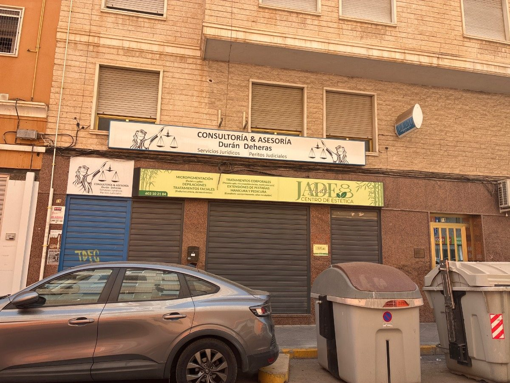
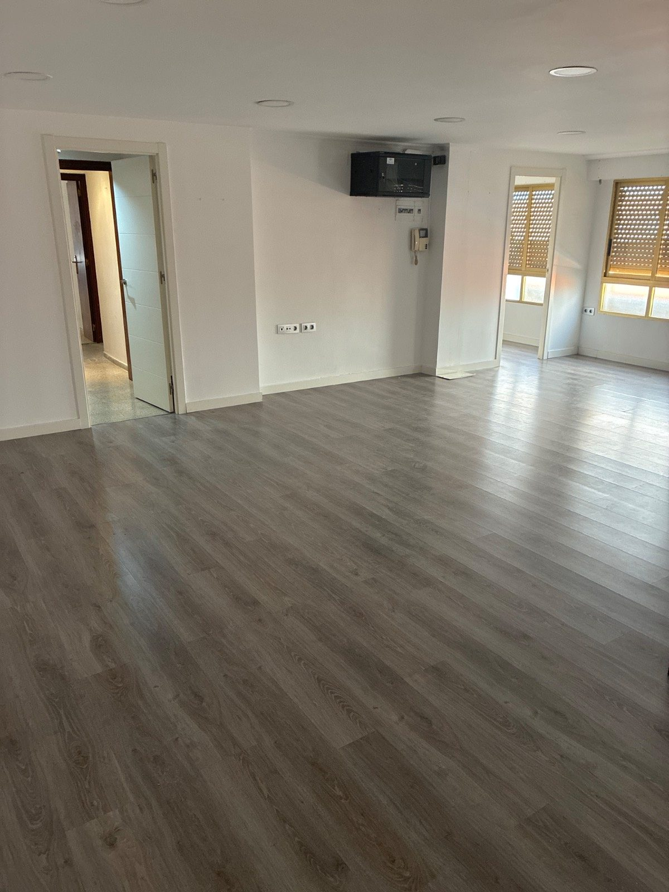
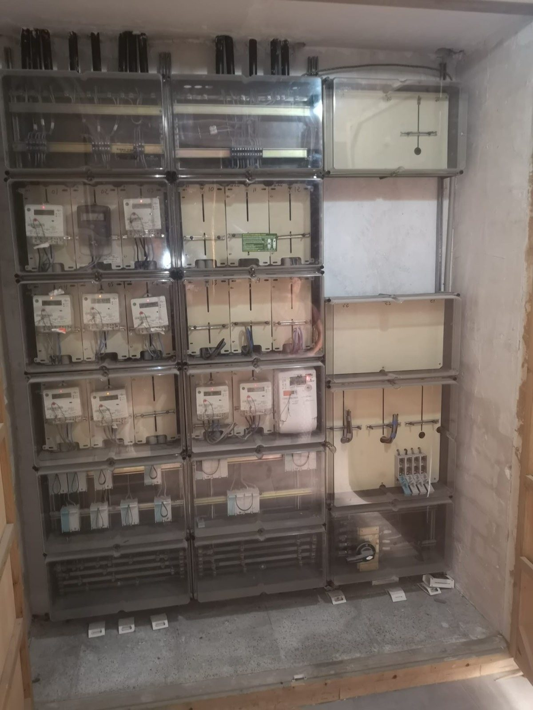
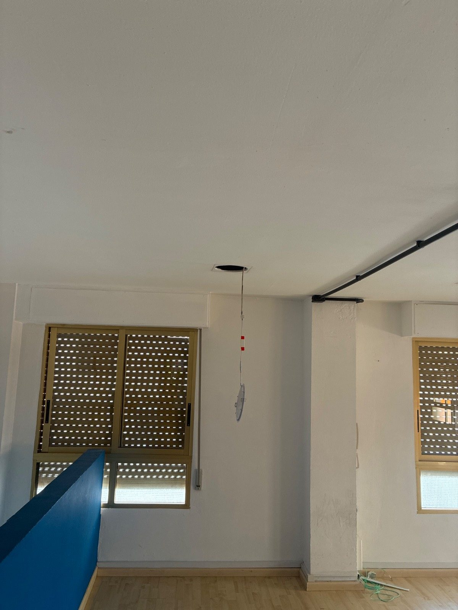
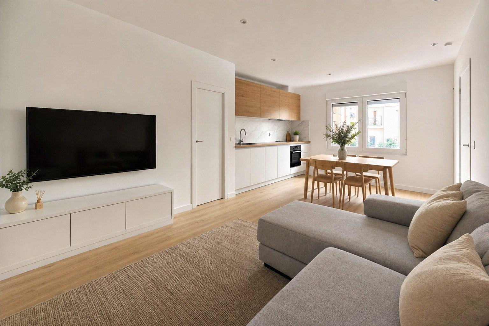
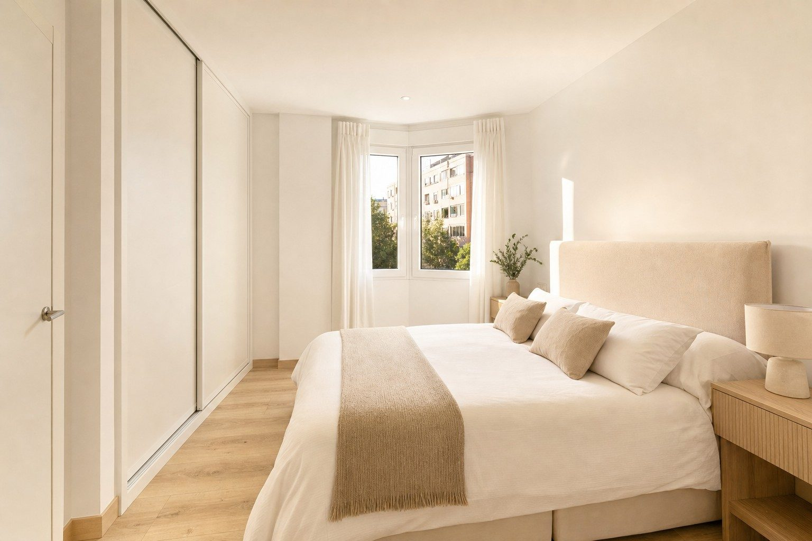
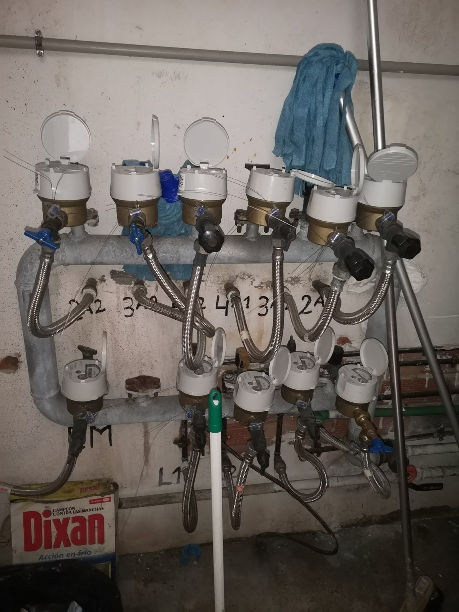

Entresuelo Altabix
Una operación de Cambio de Uso con diagnóstico GO y criterio previo favorable de Urbanismo, la demanda medida tres veces — una por fase — y un equipo que la ejecuta de principio a fin.
Metodología propia repartida en 3 fases —
GO→
MAP→
ÉXITO — y un objetivo claro: pasar de la viabilidad al beneficio real.
Sin improvisar. Sin sorpresas.
Tres perfiles diferentes. Mismos estándares.
Un objetivo: el Resultado.
Esto no va solo de un método — va de un equipo humano completo, encajado como un puzzle: tres energías que se complementan.
 RESULTADO
ESPÍRITU
MENTE
CORAZÓN
RESULTADO
ESPÍRITU
MENTE
CORAZÓN
 XaviVisión
XaviVisión PacoControl
PacoControl DaniEjecución
DaniEjecuciónLa toma de tierra del proyecto. El cerebro analítico que estudia cada camino y elige el mejor; números y documentos reales, sin suposiciones. Hace controlables las variables que no lo parecen. Su empresa, SPM, es la constructora de esta operación — un socio del equipo dirigiendo la ejecución, no un proveedor externo.
La visión creativa del proyecto: leer hacia dónde va el mercado y qué necesita. Marketing y claridad para convertir la idea en algo palpable — y la IA como palanca para escalar al siguiente nivel.
La acción: ejecuta la obra y la parte técnico-jurídica. Sabe qué toca en cada gestión y con cada ente oficial. Mucho oficio de obra; cercano, resuelve y suma. Pieza clave.
Lo que ya hemos hecho — la prueba antes de la promesa
No hablamos en futuro: tenemos operaciones cerradas y en marcha que demuestran que el método llega hasta el resultado real. Estos son los números.
Cambio de uso (local → viviendas)
| Operación | Inversión | Venta | Rentabilidad | Anualizada | Estado |
|---|---|---|---|---|---|
| CdU · 2 viviendas · C/ Diego Fuentes Serrano (Elche) | 140.000 € | 220.000 € | ROI 57% | 68% anual | Finalizada · Hilo en Discord |
| CdU · 4 viviendas · C/ Capitán Alfonso Vives (Elche) | 331.338 € | 473.000 € | ROI 44,4% | TIR ~43% | Finalizada · cierre fiscal definitivo, ago-2026 · Hilo en Discord |
| CdU · 13 viviendas · C/ Alcalde Mariano Beviá 12-14 (San Vicente del Raspeig) | 930.000 € | 1.640.000 € | ROI 76% | 38% anual | En fase final |
| CdU · 1 vivienda · C/ Fossar 15 (Elche, Raval) | 160.000 € | 220.000 € | ROI 37,5% | 45% anual | Finalizada |
| CdU · 3 viviendas · C/ D'Estoup 17 (Las Torres de Cotillas, Murcia) | 162.212 € | 205.000 € previstos | 20,9% previsto | — | En marcha · arrancó en agosto de 2026 · los partícipes la siguen en vivo desde el Visor del Inversor |
Comprar, aportar valor y vender
| Operación | Inversión | Venta | Rentabilidad | Anualizada (plazo) | Estado |
|---|---|---|---|---|---|
| C/AV/V · Tríplex · C/ Boquera Calvarí (Crevillente) | 149.026 € | 185.000 € | ROI 24% · ROE 45,5% | 27,4% anual (10,5 meses) | Finalizada · Hilo en Discord |
| C/AV/V · Piso · C/ Juan Ramón Jiménez (Elche) | 81.976 € | 118.000 € | ROI 44% | 53% anual (10 meses) | Finalizada · Detalles en el perfil del gestor |
| C/AV/V · Piso · C/ Bahamas (Orihuela Costa) | 48.000 € | 76.500 € | ROI 60% | 144% anual (5 meses) | Finalizada · Detalles en el perfil del gestor |
| C/AV/V · Piso · Av. Alcalde Ramón Pastor 12 (Elche) | 216.000 € | 270.000 € | ROI 25% | 49,9% anual | Finalizada · Hilo en Discord |
| C/AV/V · Piso · C/ Churruca, La Veleta (Torrevieja) | 65.836 € | 130.000 € | ROI 97% | — | Reservada |
Comprar, aportar valor y alquilar
| Operación | Inversión | Renta mensual | Notas | Estado |
|---|---|---|---|---|
| C/AV/A · Dúplex · C/ Joan Maragall (Sant Pere de Ribes, Barcelona) | ~167.000 € | 830 €/mes | Rentabilidad infinita — operación financiada al 100%, sin capital propio inmovilizado · Valor potencial de venta ~255.000 € | Alquilada |
El diagnóstico de viabilidad
Antes de mover capital, comprobamos que la operación se puede hacer. Aquí está lo que medimos en el mercado, el activo del que partimos y los cuatro ejes que la sostienen — con el Informe de Diagnóstico como prueba.
El mercado, medido — no opinado
Todo empieza por una pregunta: ¿hay demanda real para el producto que vamos a crear? La medimos con datos, no con intuición.
El activo del que partimos
Altabix es el barrio residencial de mayor crecimiento de Elche, pegado al campus de la UMH —a apenas 300 m en línea recta— y con fuerte componente universitario.
- Demanda de vivienda que no encuentra oferta: solo 14 pisos comparables en venta frente a 326 anuncios de alquiler activos en la misma zona.
- El barrio mueve entre 60 y 90 compraventas al año; el comprador real —parejas jóvenes, primeros compradores, estudiantes y personal universitario, verificado en campo— compite hoy por un parque de vivienda mayoritariamente sin reformar.
- No es un problema de demanda ni de localización: es la falta de producto adecuado en el punto exacto donde el mercado lo pide.
Dos locales comerciales → dos viviendas de 2 dormitorios, reformadas y listas para entrar. Con dos accesos independientes y fachada propia de cada unidad, ya confirmados en visita técnica (27/08/2026); una única limitación técnica —la altura libre— que ya tiene solución constructiva (ver Fase 2 · Encaje técnico); y suministros individuales ya existentes en cada vivienda (ver Fase 2 · Suministros). El valor no se crea comprando barato, sino cerrando la distancia entre lo que hay hoy (local comercial) y lo que el comprador de la zona busca y no encuentra (vivienda habitual reformada).
Dónde está — y por qué importa
| Punto de interés | Distancia |
|---|---|
| Supermercado (Consum) | 58 m |
| Colegio CEIP Víctor Pradera | 189 m |
| Centro de Salud de Altabix (urgencias) | 385 m |
| Universidad Miguel Hernández (UMH) | 300 m al campus · 2 min en coche |
| Hospital General Universitario de Elche | 1,1 km · 3 min en coche |
Estado original







¿Es viable este cambio de uso?
La Fase 1 valida cuatro ejes — y si uno falla, falla todo: jurídico/registral, administrativo, técnico y económico. Se obtiene un veredicto claro (GO / GO con ajustes / NO GO) antes de comprometer un euro.
Dictamen GO: los cuatro ejes, favorables
- Jurídica: favorable — revisada con la Escritura de División Horizontal (1989) y el acta y la derrama de la comunidad. Los dos locales ya son elementos privativos independientes, sin segregación pendiente, y la escritura faculta expresamente obras de adaptación y salida de humos por patio o fachada. Sin cargas ni acuerdos comunitarios pendientes que limiten el cambio de uso.
- Administrativa: favorable — consultado previamente con el área de Planeamiento Urbanístico del Ayuntamiento de Elche, con criterio favorable de compatibilidad para uso residencial. Queda recibir el CCU (Certificado de Compatibilidad Urbanística), el documento formal que lo certifica — estado y siguiente paso, ver Fase 2 · Encaje técnico.
- Técnica: favorable — altura libre y salida de humos con solución constructiva (ver Fase 2 · Encaje técnico); cada local tiene ya contador propio de agua y luz (ver Fase 2 · Suministros).
- Económica: favorable — compra ≈110.000 € frente a una venta orientativa de ≈149.000–159.000 € por unidad (ver «Mercado y activo»); detalle en el Informe de Diagnóstico.
Riesgo global bajo-medio: siete riesgos en seguimiento, ninguno alto ni inasumible. Veredicto del informe: GO — viabilidad global favorable.
El informe de viabilidad
Todo el diagnóstico, en un solo documento.
Y la documentación con la que verificamos cada eje, como prueba de que está respaldado:
El plan ejecutable
La viabilidad abre la puerta; la ejecución decide el resultado. Aquí convertimos el "sí" en un plan: el encaje técnico al detalle, los suministros, los números por partidas, los escenarios y los riesgos. El plan de obra, semana a semana, lo verás al arrancar la Fase 3.
El mapa del cambio de uso: del «sí, es viable» al plan que ejecuta la obra
La Fase 1 respondió a una pregunta: «¿es viable este cambio de uso?». La Fase 2 no responde otra — dibuja el mapa. Traza el camino completo: qué hacer, en qué orden y qué pedir a quién en cada trámite, para que la obra arranque sin bloqueos ni sorpresas.
Las 2 viviendas encajan
El encaje técnico confirma la transformación de los dos locales en dos viviendas de 2 dormitorios sin tocar la estructura: cambio de uso de cada finca, agrupación de las dos fincas registrales y nueva segregación en dos viviendas — cada trámite con su impuesto (AJD) calculado (ver Fase 2 · Números). Altura libre, ventilación y salida de humos, resueltas en proyecto (tarjetas técnicas debajo).
Plan de trámites: qué falta, en qué orden y de quién depende
- CCU — en trámite en el Ayuntamiento de Elche; criterio previo favorable ya obtenido, sin reparo técnico, solo retraso administrativo (la funcionaria que instruye el expediente está de baja). Riesgo de más peso de la operación, con garantía — ver Riesgos.
- Licencia de obras — se presenta en cuanto llegue el CCU, con el proyecto ya visado.
- Arranque de obra — declaración responsable desde la compra; la obra (16 semanas) arranca ahí, en paralelo a la tramitación de la licencia por ECUV (Entidad Colaboradora en la Verificación Urbanística; ver Planning · Gantt, Fase 3).
El encaje técnico, en cifras
El producto final (visualización · piso piloto)






Agua y luz: ya individuales — sin nueva acometida
Los suministros son una de las sorpresas clásicas de un cambio de uso. Aquí no lo son.
Comprobado en visita (fotos). Lo que queda es trámite, no obra: el cambio de titularidad y la adecuación interior de las instalaciones, contempladas en el proyecto técnico y en el presupuesto de obra.



La inversión, de un vistazo
El cuadro oficial del Programa IN, con las cifras de esta operación. Debajo, el desglose partida a partida.
| GESTOR | INVERSOR | LA INVERSIÓN EN CONJUNTO | |
|---|---|---|---|
| Aportación € | 34.489 € | 225.000 € | 259.489 € |
| Aportación % | 13,29 % | 86,71 % | 100 % |
| Beneficio € | 7.032 € | 45.879 € | 52.911 € |
| Beneficio % | 13,29 % | 86,71 % | 100 % |
| Rentabilidad Neta | 20,39 % | 20,39 % | 20,39 % |
| Rentabilidad ANUALIZADA | 20,39 % | 20,39 % | 20,39 % |
El capital rinde lo mismo para todos: 20,39% sobre lo aportado. Si el resultado de la operación supera ese objetivo, el excedente es bonus y se reparte aparte — ver «La propuesta».
Puente hasta el beneficio: venta realista 325.000 € − inversión 259.489,09 € = 65.510,91 € · se paga del beneficio: honorario servicer 12.000 € + plusvalía municipal de la venta 600 € → beneficio 52.911 €. Escenario realista, sobre los 12 meses del contrato de cuentas en participación.
Precio libre: los locales nunca fueron vivienda de protección oficial (VPO) — son comerciales, ese régimen no aplica.
Dos escenarios
Contamos con el escenario realista: 325.000 € por las dos viviendas, dentro del rango que confirmó el informe completo (155.000–170.000 € por unidad, ver debajo). El optimista es el techo razonable; su excedente es bonus, no promesa.
| Realista (con el que contamos) | Optimista | |
|---|---|---|
| Venta 2 unidades | 325.000 € (155.000+170.000) | 335.000 € (160.000+175.000) |
| Beneficio de la operación (tras servicer 12.000 € + plusvalía venta 600 €) | 52.911 € | 52.911 € — igual que el realista |
| Rentabilidad del capital | 20,39% | 20,39% — igual que el realista |
| + Bonus (aparte, si el resultado supera el objetivo de rentabilidad) | — | 3.000 € al lado inversor * |
| Rentabilidad real del inversor | 20,39% | ≈21,7% (20,39% de base + el bonus) |
El resultado no cambia entre escenarios: 52.911 € y 20,39% para todos, vendamos a 325.000 € o más caro. Lo que sí se mueve con el precio es el bonus, una capa aparte que se activa solo si el beneficio supera ese 20,39%. En el optimista el excedente son 10.000 € *, repartidos 70% gestor / 30% inversores: 3.000 € para el conjunto de inversores, que elevan su rentabilidad a ≈21,7% (ver «La propuesta»). El 24,24% que puede aparecer en otros cálculos no es lo que cobra el inversor: es la referencia si todo el excedente se repartiera a prorrata entre gestor e inversores.
Los números, partida a partida
De la foto orientativa de la Fase 1 al cálculo cerrado.
| Partida | Importe (cálculo cerrado con el presupuesto de obra SPM) |
|---|---|
| Compra de los 2 locales | 110.000 € |
| ITP (9%) + notaría + registro + gestoría | 11.700 € |
| AJD (cambio de uso + agrupación + segregación) | 4.258,58 € |
| comisión de agencia inmobiliaria (intermediación en la compra) | 12.100 € |
| honorarios técnicos | 5.227,20 € |
| ICIO — impuesto municipal de obras (2,7%) | 744,45 € |
| reforma (presupuesto SPM V3, con IVA) | 108.028,80 € |
| otros gastos de reforma (limpieza, certificados ECUV, salida de humos) | 4.938,06 € |
| gastos varios hasta la venta (seguro de RC de obra, alarma, cuotas de comunidad, agua, luz e IBI) | 1.492 € |
| imprevistos | 1.000 € |
| INVERSIÓN TOTAL DE LA OPERACIÓN | 259.489,09 € |
El precio, confirmado por dos motores
El mini-IM·PULSO de la Fase 1 dio la foto; este es el informe completo, hecho meses después con la operación más madura, que cruza dos motores de valoración.
- Motor IM·PULSO — 60 testigos de mercado (23 Viv. 1 / 37 Viv. 2).
- Portal del notariado — precios reales de escritura.
Las dos convergen en 155.000–170.000 € por unidad.
📈 Ver informe completo IM·PULSO · 2 motores cruzadosLos riesgos: los que cerramos y los que vigilamos
Estos son los riesgos de la operación, con su peso (P×I: probabilidad × impacto) y su mitigación. El de más peso es el CCU — el certificado urbanístico, aún en trámite — y lo explicamos justo debajo de la tabla. La matriz completa, con la evaluación de cada uno, está enlazada al final de esta sección.
| Riesgo | Estado | P×I | Mitigación |
|---|---|---|---|
| CCU — Certificado de Compatibilidad Urbanística | 🟡 EN TRÁMITE | 8 · Medio | Retraso administrativo, sin reparo técnico — arras firmadas y condicionadas al CCU (detalle debajo). |
| Altura de obra | 🟡 VIGILADO | 6 · Bajo | Retirar el granzón/relleno y la solera para recuperar la altura, comprobando cotas durante la obra hasta los 2,55–2,56 m finales. |
| Instalaciones | 🟡 VIGILADO | 6 · Bajo | Revisar trazados, protecciones, potencias y adaptación interior conforme al proyecto y la normativa aplicable. |
| Fachada, patios y comunidad | 🟡 VIGILADO | 6 · Bajo | Ejecutar las obras respetando las condiciones de las normas comunitarias y la LPH. |
| Tramitación de la licencia | 🟡 VIGILADO | 6 · Bajo | Mantener el expediente técnico completo y responder con seguimiento documentado a cualquier requerimiento administrativo. |
| Desviación del coste de ejecución de la obra | 🟡 VIGILADO | 9 · Medio | Presupuesto cerrado con la constructora (SPM, 620 €/m² sobre 144 m² de superficie construida base del presupuesto) antes de arrancar. Durante la obra se controlan certificaciones y compras, y el modelo económico mantiene una partida de contingencia. SPM está dirigida por uno de los socios del equipo gestor — alineación de intereses y control directo de la ejecución. |
| Precio de venta por encima del rango del informe de mercado | 🟡 VIGILADO | 9 · Medio | Salida a 2.481 €/m², dentro de la banda entre vivienda usada y obra nueva del barrio; el precio se contrasta por tercera vez con el MTVV antes de vender (Fase 3) y el plan de venta lo ajusta si el mercado no responde en 60 días. |
Nota sobre la base del presupuesto de obra: el inmueble tiene 131 m² construidos (ver «Mercado y activo»); el presupuesto de SPM detalla varias partidas (levantado de solado, pavimento SPC) sobre 144 m² — probablemente la superficie construida bruta de los dos locales frente a la neta de 131 m². Reconciliación razonada, no dato verificado al 100 %.
El CCU: el riesgo de más peso — y el único que no asumes tú
- Qué pasa: el CCU lleva meses en trámite (estado y siguiente paso, ver Fase 2 · Encaje técnico · Plan de trámites). No hay reparo técnico: la compatibilidad administrativa está verificada en el proyecto técnico y en el Informe de Diagnóstico — y el planeamiento urbanístico ya tiene criterio favorable de compatibilidad para uso residencial (ver Fase 1 · Viabilidad).
- Cómo estás protegido: las arras ya están firmadas y condicionadas a la viabilidad del proyecto: no se perfecciona la compra hasta obtener el CCU. Si el certificado no fuera favorable, no hay operación — ese riesgo no lo asumes tú.
Del plan al resultado
Aquí no acompañamos: ejecutamos. El calendario de obra, la contratación cerrada, la tercera comprobación del precio y la venta.
Obra: 16 semanas, planificadas capítulo a capítulo
Calendario. CCU (en trámite; esperado antes del 13-oct-2026) → escritura de compra, ya comprometida en arras → declaración responsable + obra (16 semanas) en paralelo a la licencia por ECUV → venta: 2-3 meses por unidad, 3-5 el conjunto. Dossier actualizado el 23-sep-2026.
Orquestamos y ejecutamos hasta la venta
La Fase 3 ejecuta: dirección de obra por hitos, proveedores con ofertas comparadas, control económico y cierre documental auditable. Es donde el plan se convierte en beneficio.
Preparada para arrancar
- Tercera comprobación del precio (MTVV): contrastamos sobre el terreno los rangos del mini-IM·PULSO (Fase 1) y del IM·PULSO V2 (Fase 2) — 6 testigos directos, 5 inmobiliarias de la zona y una prueba de comercialización real (tabla debajo).
- Obra contratada, no estimada: presupuesto cerrado con SPM y contrato de obra sobre modelo propio, con planning de 16 semanas (ver Planning · Gantt).
- Estructura lista: sociedad gestora al corriente, cuenta exclusiva de la operación abierta, modelo de CCP preparado (ver bloque Inversión).
- Pendiente y de quién depende: el CCU, del Ayuntamiento de Elche, y tras él la licencia, tramitada por la vía rápida de la ECUV (ver Plan de trámites, Fase 2).
Estrategia de salida
Posicionamiento: vivienda de 2 dormitorios, reformada y lista para entrar, en Altabix —barrio de 21.532 habitantes, el de mayor crecimiento de Elche (distancias a campus y servicios, ver «Mercado y activo»)—.
- Comprador verificado en la prueba de comercialización (6 contactos telefónicos en 6 días, dispuestos a pagar entre 150.000 y 160.000 €): parejas jóvenes, primeros compradores y personas solas — coincide con el target del barrio: 86-89% comprador nacional, 65-75% vivienda habitual, 15-20% alquiler a estudiantes y jóvenes profesionales.
El precio, comprobado tres veces — una por fase:
| Comprobación | Cuándo | Muestra | Rango por unidad |
|---|---|---|---|
| 1 · Mini-IM·PULSO | Fase 1 · GO | tanteo de zona (9 testigos) | 149.000 – 159.000 € |
| 2 · IM·PULSO V2 (2 motores) | Fase 2 · MAP | 60 testigos + notariado | 155.000 – 170.000 € |
| 3 · MTVV — testigos directos | Fase 3 · ÉXITO | 6 testigos | 139.000 – 199.000 € |
| 3 · MTVV — inmobiliarias de la zona | Fase 3 · ÉXITO | 5 agencias | 130.000 – 169.000 € |
| 3 · MTVV — comercialización real | Fase 3 · ÉXITO | 6 contactos en 6 días | 150.000 – 160.000 € |
| Precio asumido | — | — | 155.000 + 170.000 = 325.000 € |
Por qué el precio asumido (325.000 €) queda por encima de los tres escenarios del IM·PULSO V2 (conservador 251.071 €, medio 278.573 €, optimista 310.161 €): el informe completo solo recoge testigos de vivienda usada del barrio, sin ningún testigo de obra nueva en Altabix. El propio informe sitúa la vivienda usada como suelo del mercado (1.647 €/m²) y la obra nueva de Elche como techo (2.632 €/m²), con el producto a estrenar por cambio de uso entre ambos. Las dos viviendas salen a 2.481 €/m², dentro de esa banda — y la tercera comprobación (MTVV) lo confirma sobre el terreno.
Y cómo entras tú
Quién compra el activo, qué pedimos y qué ponemos, el contrato que te blinda y los compromisos que firmamos contigo.
Quién compra el activo — y cómo entras tú
Es la estructura que usamos en todas nuestras operaciones del Programa IN: una sola sociedad al frente, un solo contrato por inversor y el capital de todos —el nuestro incluido— en la misma cuenta y con las mismas reglas. Qué pedimos y qué ponemos, en la sección siguiente; el contrato y sus garantías, en «Cómo entras · CCP».
La propuesta: una Joint Venture servicer
En el Programa IN hay dos formatos de Joint Venture: waterfall (el gestor cobra un porcentaje del resultado por tramos) y servicer (honorario fijo de gestión + capital propio en las mismas condiciones que el inversor). Esta operación es servicer.
Lo que pedimos
Honorario servicer fijo de 12.000 € por la gestión integral de la operación: propuesta, dirección de la aportación de valor y conducción del proyecto hasta su cierre. Una cifra cerrada y conocida de antemano, descontada del resultado y reflejada en el Análisis económico (ver Fase 2 · Números).
Más un bonus ligado a superar el objetivo — lo detallamos justo aquí debajo.
Lo que ponemos
34.489 € de capital propio —el 13,29% del total—, puesto junto al tuyo (ver «Cómo entras · CCP»).
Gestión llave en mano + el Cuadro de Mandos oficial de CdU de 0 a ÉXITO: sigues tu inversión en vivo (ver «Visor del Inversor»).
Solo ganamos más si la operación va mejor de lo previsto
El objetivo de rentabilidad es 20,39% sobre el capital aportado. Si el beneficio de la operación supera ese objetivo, el excedente es un bonus que se reparte entre el gestor y el conjunto de inversores:
El bonus se calcula sobre el excedente de beneficio y se liquida al cierre económico final de la operación. Es una capa aparte de la rentabilidad: nunca resta, solo suma — y la parte de cada inversor es proporcional a su aportación.
Cómo entras, cómo cobras — y cómo te blinda
Reparto y rentabilidad, partida a partida y escenario a escenario: ver Fase 2 · Números.
Cómo funciona. Cuentas en Participación (arts. 239-243 del Código de Comercio): tú aportas capital y no gestionas ni apareces frente a terceros; CdU de 0 a ÉXITO SL responde frente a terceros y gestiona. Cobras conforme se vende cada vivienda, en 5-7 días, y la liquidación final del beneficio a los 15 días del cierre. Si el beneficio de la operación supera el objetivo de rentabilidad del 20,39%, el excedente se reparte aparte, como bonus (ver «La propuesta») — nunca resta. Fiscalidad del partícipe: rendimiento del capital mobiliario (19-23 % según tramo), con retención del 19 % que practica el gestor.
Cómo te blinda el contrato
El CCP no es un papel de confianza: es un blindaje recíproco — protege al partícipe y a la gestora por igual.
Nuestros compromisos contigo
No te pedimos confianza ciega. Esta operación se rige por el Código de Buenas Prácticas del PROGRAMAIN — y lo cumplimos punto por punto. Esto es lo que firmamos contigo:
Tu dinero, protegido
Transparencia y control
Garantías
Y te lo documentamos
La sociedad gestora está al corriente de sus obligaciones y sin deudas pendientes. Aquí tienes su documentación societaria y de solvencia, para que puedas comprobarlo por ti mismo en lugar de creernos.
Y por encima de todo, un compromiso que nadie más en la plataforma te da: verlo tú mismo, cada semana, desde tu cuadro de mandos. 👇
Tu operación, en vivo — no en un PDF que envejece
Visor del Inversor
exclusiva para inversores
Así se ve tu operación dentro del Visor: estado, cifras, cámaras y documentación. Las cámaras, en directo; el resto, actualizado cada semana.
Obra en semana 6 de 16Planning actualizado hoy
Cuenta dedicada al día3 movimientos nuevos
2 documentos nuevosAñadidos esta semana
Lo que ves es el Visor real de nuestra operación de Torres de Cotillas, hoy en obra (la del track record). El tuyo se activa al arrancar la obra del entresuelo, con las cifras y las cámaras de Altabix.
Toda la documentación, a un clic
Cada documento ya se ha mostrado en la fase a la que pertenece. Este es el índice maestro, por si quieres revisarlos todos juntos — cada botón abre el documento en Drive, en una pestaña nueva.
De la viabilidad al beneficio real — contigo dentro
Si quieres entrar, hablamos 1 a 1 esta semana — los CCP se firman por orden de compromiso.
Accede a esta oportunidad en la plataforma del PROGRAMAINAbrir en la plataforma →Primero claridad. Luego control. Y al final, resultado.